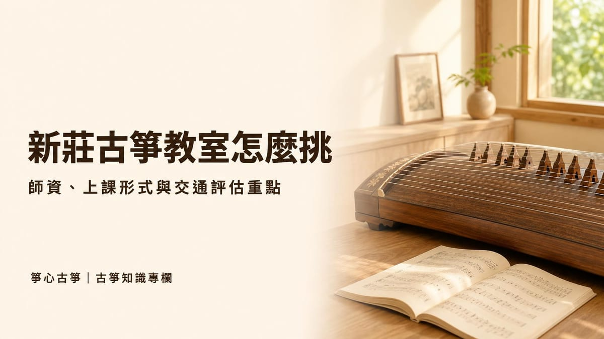
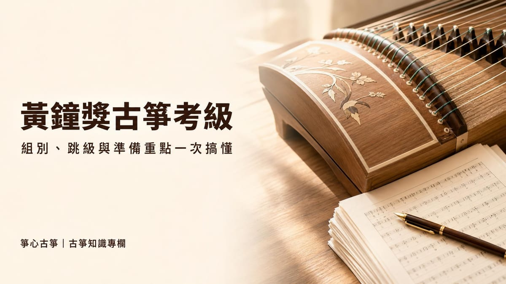

在地學習
新莊學古箏：怎麼挑適合自己的音樂教室
新莊有多間音樂教室提供古箏課程，實際上該怎麼比較？本篇整理上課形式、師資背景、體驗課評估重點，以及交通與合約退費等通用挑⋯

黃鐘獎古箏考級，正式名稱是「黃鐘全國音樂檢定考級」，由台北民族樂團主辦，是台灣行之有年的國樂器檢定系統之一。除了古箏，官方同時也辦理琵琶、柳琴、阮咸、揚琴等彈撥樂器，以及二胡、笛子等拉弦與吹管樂器的考級，古箏只是其中一個項目。
黃鐘考級分為現場考級與網路考級兩種形式，一年依考區分成多個梯次（約落在 1–3 月、4–6 月、7–9 月、10–12 月）。官方會在網站的「簡章/曲目表」頁面公告當期最新的簡章與曲目表，並不定期修訂版本，因此想知道目前適用的曲目與規則，最保險的做法是直接查詢官方最新公告，而不是沿用網路上不確定年份的舊清單。
報名黃鐘考級之前，第一件要確認的事是要考甲組（一般組）還是乙組（興趣組），兩者的差異會直接影響練習方式：
| 項目 | 甲組（一般組） | 乙組（興趣組） |
|---|---|---|
| 曲目版本 | 需依官方指定版本演奏 | 版本較為開放 |
| 指定曲 | 可以看譜演奏 | 可以看譜演奏 |
| 自選曲 | 需要背譜 | 可以看譜，不要求背譜 |
| 證書 | 一般證書 | 證書會加註「興趣組」字樣 |
簡單來說，乙組（興趣組）對成人或業餘學習者較友善，背譜壓力較小；甲組（一般組）版本與背譜要求都更嚴謹，適合打算持續往高級別考、或有正式證書用途需求的學生。值得留意的是，第一級到第六級，學生可以在甲、乙組之間自由來去；但第七級之後，只能由甲組轉乙組，乙組無法再轉回甲組，等於是「先決定方向，再往上考」的分水嶺，建議提早想清楚目標再報名。
黃鐘考級原則上建議依序報考，但官方也提供彈性：如果已經考過中國大陸各類考級或台灣其他考級系統的證書，可以在報名時檢附證書影本（隨報名表寄送，或以電子郵件提供檔案），申請直接報考對應的下一級，不必從第一級重新考起。這對已有考級經驗、只是想轉換系統的學生特別實用，但實際能承認到哪一級，仍以官方審核結果為準。
另外，現場考級可以在同一個考區一次報考兩個級數（需要分別填寫兩張報名表）；網路考級則每一場次只能報考一個級數。考區也可以自由選擇，不受戶籍或住所限制，例如在台中考區通過第一級後，第二級可以改到其他縣市的考區應考，方便配合自己的行程與練習進度。
很多人搜尋「黃鐘獎古箏考級曲目」，是想要一份可以直接背的清單。但曲目表本身會隨簡章版本修訂（官方已公告 2026 年 1 月的修訂版簡章），舊版清單不一定適用於目前的考期，直接照抄反而可能練錯曲子。比較務實的做法是：
黃鐘官方目前沒有提供電話客服，簡章或曲目表若有疑問，需透過電子郵件或官方 Facebook 粉專聯繫。想進一步了解古箏考級的整體生態，也可以參考本站另一篇古箏等級考試與證照須知，比較黃鐘獎與其他考級系統的差異。
不管最後考的是哪一份曲目，準備考級的邏輯大同小異：
實際需要練多久因人而異，和每天能投入的時間、原本的程度都有關係，建議把重點放在練習品質與規律性，而不是單純比較別人花了幾個月。
除了曲目本身，報名與考試當天也有幾個細節值得留意：
黃鐘獎古箏考級的曲目與簡章會不時修訂，與其死記網路上不確定年份的清單，不如把力氣放在確認官方最新公告、選對適合自己的組別，並紮實準備基本功。如果還不確定自己目前的程度適合報考哪一級，或想知道最近的考試時程，歡迎參考本站考級比賽時程，也可以先預約新莊箏心古箏音樂教室的 $350 體驗課，讓老師實際聽你彈一段，再一起討論合適的考級規劃。
官方網站的「簡章/曲目表」頁面提供當期最新版本的簡章與曲目表，內容會隨版本修訂，建議直接下載當期文件，或參考本站的考級比賽時程頁面掌握考試資訊。
主要差異在版本指定、背譜要求與證書標註：甲組版本固定、自選曲需背譜；乙組版本較開放、指定曲與自選曲皆可看譜。以正式證書用途為目標可考慮甲組，想降低背譜壓力可考慮乙組。
原則上建議依序報考；若已持有中國大陸或台灣其他考級系統的證書，可檢附證書影本申請報考對應的下一級，實際核准級別以官方審核結果為準。
現場考級可以在同一考區報考兩個級數，但需要分別填寫兩張報名表；網路考級每個場次只能報考一個級數。
依練習頻率與曲目難度而異，一般會建議至少留 2–3 個月密集練習期，重點放在指法正確與節奏穩定，而不是一味求快。
新莊箏心古箏音樂教室提供 $350 體驗課，由老師一對一帶你認識古箏、彈出第一段旋律。
本教室位於新北市新莊區（鄰近新莊體育場、新泰國中），採預約制，為確保上課品質平日不開放參觀；預約成功後將提供詳細交通資訊。